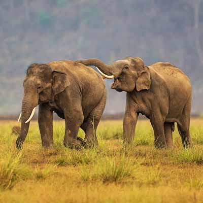
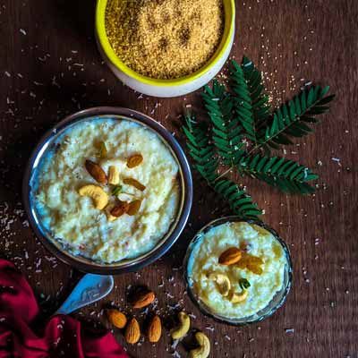
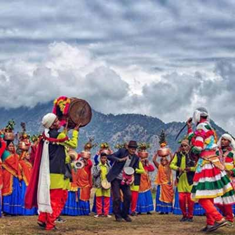

Discover Uttrakhand

Nature's Bounty : Experience the natural beauty
Cocooned in nature, away from the chaos and fumes of the city, Uttarakhand is a breath of fresh air and a sight for soar eyes.

Into the wild : Explore the forest
Conservation reserves, world heritage sites and national parks teeming with varied flora and fauna - Uttarakhand has it all.

Flavours of the land : Relish traditional food
From wholesome ingredients to flavourful spices, Uttarakhand's food is a blend of taste and nutrition.

Reconnect : The land of yoga and wellness
Touted as the yoga capital of the world, Uttarakhand boasts a number of centres run by professionals and is known for spiritual wellness as well.

Voices and Culture : Local festival and events
Uttarakhand is home to warm and friendly people whose cultures and traditions are likely to be seen or experienced anywhere else.